O modelo do canal de indicação: identidade, perfis-alvo, jornada do parceiro, metas e rotina de gestão.
Sua análise crítica como coordenador: o que é exequível, o que ajustar, o que falta — com a realidade da agenda e da base.
Após esta reunião, o playbook é revisado com os ajustes acordados e segue para a versão de execução.
| Perfil | Característica-alvo | Prioridade |
|---|---|---|
| Contabilidades & BPOs | Escritórios contábeis de médio/grande porte e BPOs financeiros com carteira Lucro Real / Presumido | Foco principal |
| Escritórios Jurídicos | Bancas cíveis, trabalhistas e empresariais sem área tributária | Foco principal |
| Consultorias de Negócios | Consultores de gestão, CFOs as a service, assessores com acesso C-level | Foco principal |
| Representantes & Corretores | Representantes B2B e corretores corporativos — atuação pontual | Por oportunidade |
Entidades de classe, indicações e rede — contato C-level do parceiro
Modelo LA apresentado: papéis, portfólio e regras do canal
Contrato assinado (ZapSign) + onboarding agendado
Levantamento da base do parceiro cruzada com o ICP
Contas-alvo, estratégia de abertura e agenda do ciclo
Indicações no CRM, dashboard e reuniões de resultado
| Ritual | Frequência | Pauta |
|---|---|---|
| Contato efetivo · Tier A | Quinzenal | Pipeline da carteira, contas-alvo, pendências e próxima abertura |
| Contato efetivo · Tier B | Mensal | Status das indicações e destrave de contas |
| Régua · Tier C | Contínua (automatizada) | Conteúdo, convites a eventos e gatilhos de reativação (Agente + MKT) |
| Reunião de resultado | Mensal (A) / Bimestral (B) | Planejamento & resultado: conversões, qualidade da indicação, plano do ciclo |
| Weekly de Parcerias | Terças · 45 min | Ulisses + Cleber: mapeamentos, pipeline de indicados, exceções |
Ciclo de 45–60 dias — Reforma Tributária (EC 132/23) e temas de autoridade: captam e reativam no mesmo movimento.
Em vez de "vamos retomar?", chegar com 3 contas da carteira do parceiro já cruzadas com o ICP e proposta de abertura pronta.
One-pagers por solução, FAQs de capacitação, roteiro de abertura e material co-brandável no padrão da marca.
Sessões mensais curtas de capacitação — presença alimenta a régua de atividade do parceiro.
Ranking trimestral por indicações convertidas, selo "Parceiro Certificado LA" e prêmio anual do canal.
Incentivos escalonados por tier (via aditivo validado pelo Jurídico); brindes como cortesia institucional, com política escrita.
| Papel | Responsabilidade na parceria |
|---|---|
| Sponsor · Dr. Lucas (CEO) | Aprova modelo, metas e exceções de maior alçada; abre portas institucionais |
| Gestor do canal · Cleber Candia (CCO & CSO) | Supervisiona o canal, arbitra exceções de roteamento e conflitos de origem |
| Coordenador · Ulisses | Ponto focal único do parceiro: capta, credencia, mapeia carteira, conduz plano conjunto e rituais |
| Executivo de Vendas (roteado pelo CRM) | Conduz 100% da ação comercial na conta indicada; reporta status no dashboard |
| Parceiro (indicador) | Abre a porta, valida a oportunidade e acompanha pelo dashboard |
Deslocamento (km/passagens), estadia e alimentação nas agendas do canal — visitas a parceiros, eventos e reuniões presenciais aprovadas.
Agenda de campo planejada por ciclo (rota por praça, várias visitas por deslocamento), aprovação prévia do CCO para viagens com estadia e registro de despesas por atividade.
Custo do canal acompanhado por ciclo contra o resultado (indicações e conversões) — visibilidade de ROI, não controle burocrático.
| Fase | Janela* | Entregas & marco |
|---|---|---|
| F1 · Fundação & Ativação da Base | Semanas 1–2 | 82 parceiros cadastrados no Twenty (tier/status) + diagnóstico — M1: base 100% classificada |
| F2 · Prospecção Ativa | Semanas 3–6 | Entidades de classe (SESCON, ACIs, OABs), contabilidades e consultorias — M2: régua por tier operante (≥90%) |
| F3 · Capacitação & Onboarding | Semanas 7–8 | Kit do parceiro, webinars, treinamento — M3: dashboard do parceiro no ar |
| F4 · Roteamento & Rotina | Contínuo | Indicações roteadas, reuniões de resultado — M4: 100+ parceiros ativos pela régua |